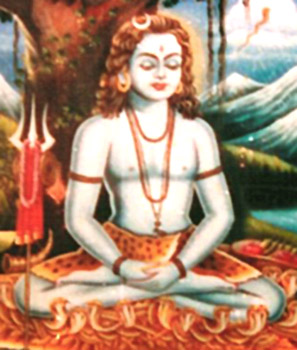

Punjabi literature refers to literary works written in the Punjabi language particularly by peoples from the historical Punjab region of India and Pakistan including the Punjabi diaspora. The Punjabi language is written in several different scripts, of which the Shahmukhi, the Gurmukhī scripts are the most commonly used.
Early Punjabi literature (c. 11th - 13th century)
The earliest Punjabi literature is found in the fragments of writings of the 11th Nath yogis Gorakshanath and Charpatnah which is primarily spiritual and mystical in tone.[1] Notwithstanding this early yogic literature, the Punjabi literary tradition is popularly seen to commence with Fariduddin Ganjshakar (1173-1266).[2] whose Sufi poetry was compiled after his death in the Adi Granth.
The Mughal and Sikh periods (c. 16th century - 1849
The Janamsakhis, stories on the life and legend of Guru Nanak (1469–1539), are early examples of Punjabi prose literature. Nanak himself composed Punjabi verse incorporating vocabulary from Sanskrit, Arabic, Persian, and other Indic languages as characteristic of the Gurbani tradition. Punjabi Sufi poetry developed under Shah Hussain (1538–1599), Sultan Bahu (1628–1691), Shah Sharaf (1640-1724), Ali Haider (1690-1785), Saleh muhammad safoori (son of, Mai Safoora whome Ali Haider had given great tribute) and Bulleh Shah (1680-1757). In contrast to Persian poets, who had preferred the ghazal for poetic expression, Punjabi Sufi poets tended to compose in the Kafi.[3]